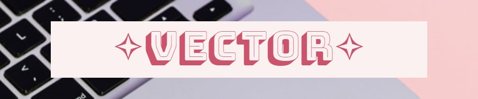
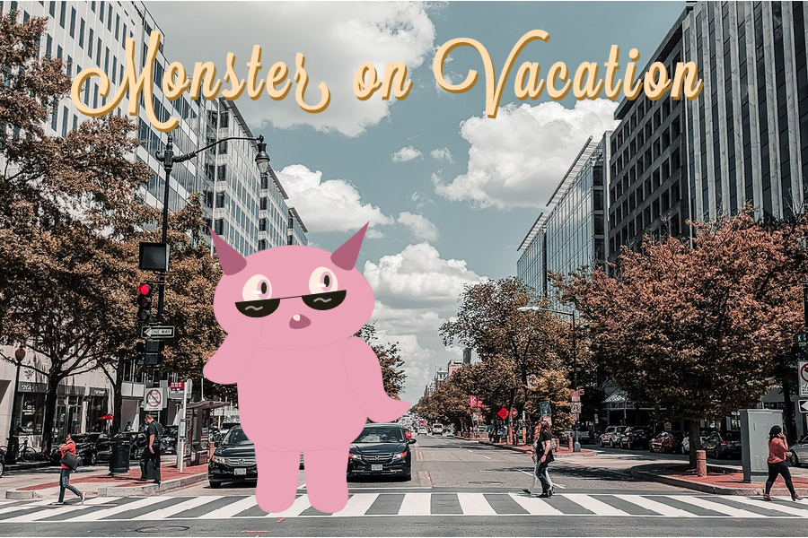

⳾*⑅*❀⑅*❀⑅*❀⑅*❀⑅*❀⑅*⳾⳾*⑅*❀⑅*❀⑅*❀⑅*❀⑅*❀⑅*⳾⳾*⑅*❀⑅*❀⑅*❀⑅*❀⑅*❀⑅*⳾⳾*⑅*❀⑅*❀⑅*❀⑅*❀⑅*❀⑅*⳾
‧͙⁺˚*･༓☾Home☽༓･*˚⁺‧͙ |
‧͙⁺˚*･༓☾Raster Project☽༓･*˚⁺‧͙ |
‧͙⁺˚*･༓☾Vector Project☽༓･*˚⁺‧͙ |
‧͙⁺˚*･༓☾Animation Project☽༓･*˚⁺‧͙ |
‧͙⁺˚*･༓☾InDesign Project☽༓･*˚⁺‧͙ |
‧͙⁺˚*･༓☾Contact Me☽༓･*˚⁺‧͙
⳾*⑅*❀⑅*❀⑅*❀⑅*❀⑅*❀⑅*⳾⳾*⑅*❀⑅*❀⑅*❀⑅*❀⑅*❀⑅*⳾⳾*⑅*❀⑅*❀⑅*❀⑅*❀⑅*❀⑅*⳾⳾*⑅*❀⑅*❀⑅*❀⑅*❀⑅*❀⑅*⳾

The second major project we had in this class was to create a “creature” using Adobe Illustrator. This project was also a very fun one yet challenging one! I found myself doing many doodles in my notebook and had trouble deciding what kind of creature I wanted to do. I ended up settling with a “cat-owl” hybrid kind of creature at first, but I struggled transferring that design from paper onto illustrator.
After some time I decided to do a pink monster-like creature that I had also drawn in my notebook and tried to make the shapes simple as possible due to time constraints on my end.. Despite the setbacks I had of remaking my creature, I enjoyed the idea I ended up with. I think the idea of a monster on vacation in a city is a fun one. If I were to re-do it again, I would probably have taken the time to really get a feel for Illustrator and have a second attempt at the cat-owl.